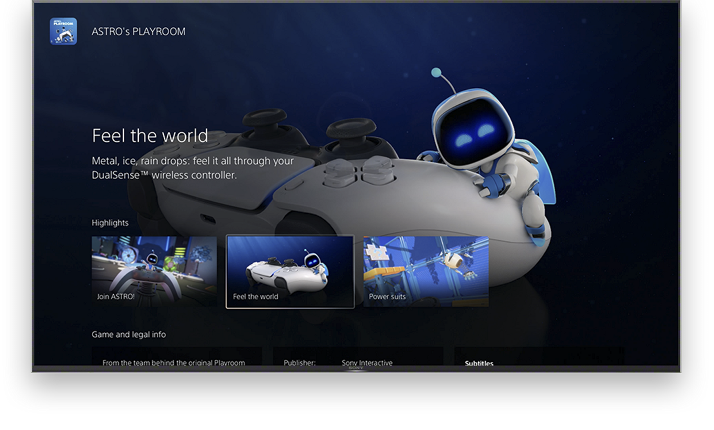
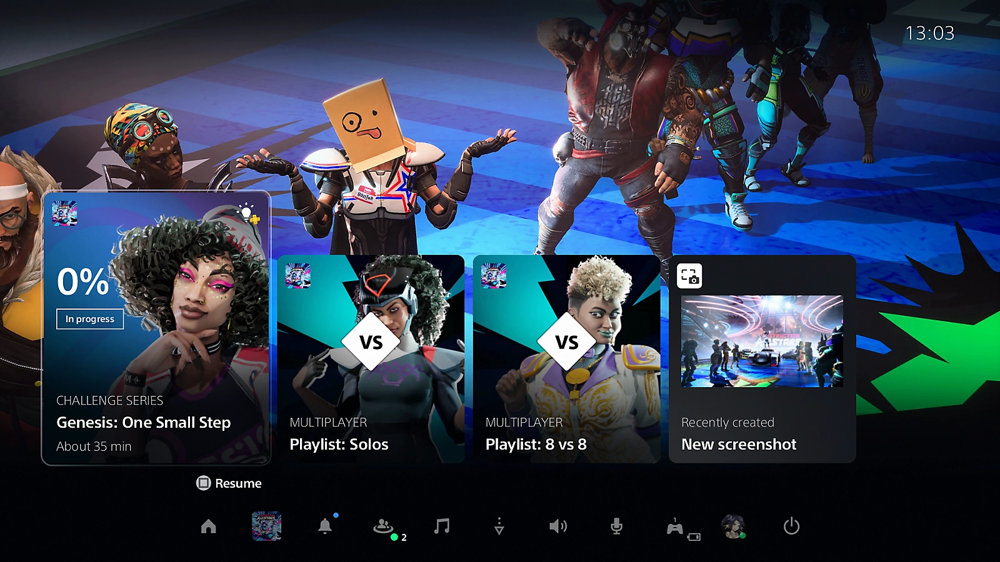

Take a closer look at the PS5 console UI and discover some of the new
ways to play.
Game Hub
Games have hubs on PS5. Each game’s hub collects everything related to that game
together, from activities, to community broadcasts, to new game content. It’s a
constantly updated space that will evolve and adapt throughout the game’s
lifecycle.


Activities
Game creators can build their PS5 games so you can jump straight into specific
missions, modes, quests, and more straight from the console's Control Center.
Control Center
Cross-generation chat with PS4™
Whether your friends are on PS4 or PS5, cross-generation voice chat means everyone
can keep the conversation going with their account for PlayStation™Network. You can
even chat with players on mobile devices who have PlayStation App.
3D SOUND
Experience immersive virtual surround sound with 3D Audio support for your TV.
Tempest 3D AudioTech is accessible directly from your built-in TV speakers when you're playing games and watching
videos on your PS5 console.
SSD Storage Expansion
Upgrade the storage capacity of your PS5™ console by installing a compatible M.2 solid state drive.
You can now play your PS5 and PS4™ games and media apps directly from the high-speed SSD expansion, which you can also use to store, download and manage this content.
Variable Refresh Rate
You can enhance the visual performance of compatible PlayStation®5 games by enabling Variable Refresh Rate (VRR) on your PS5 console. This allows your PS5 console to sync the refresh rate of your display to the PS5 console’s graphical output on HDMI 2.1 VRR-compatible TVs and PC monitors. Results may vary depending on the TV you’re using and game you’re playing.
Great experiences that stay with you
on PS4™ and PS5™
Discover some of the games, features and experiences that unite PS4 and PS5 consoles, and how the power of
PlayStation®5 lets you push the boundaries of play.